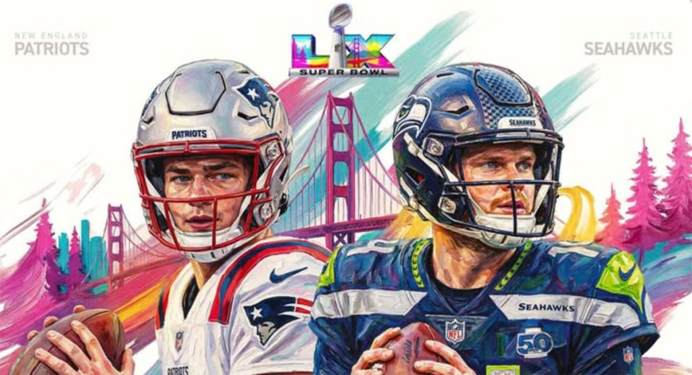

El domingo 8 de febrero de 2026, el Levi's® Stadium de Santa Clara, California, será el anfitrión del Super Bowl LX. Este evento no solo conmemora la edición número 60 del gran juego, sino que marca un reencuentro cargado de historia: los New England Patriots y los Seattle Seahawks se verán las caras nuevamente por el Trofeo Vince Lombardi.
Diez años después de su primer enfrentamiento en el Super Bowl XLIX, este partido es una revancha directa que trae de vuelta el recuerdo de una de las jugadas más memorables (y polémicas) de la historia de la NFL: la intercepción en la yarda 1.
El Factor Revancha: El Fantasma de Glendale
Para los Seahawks, este partido es la oportunidad de reescribir un final doloroso. En 2015, a punto de anotar el touchdown de la victoria, una intercepción de Malcolm Butler selló su destino. Hoy, con Sam Darnold como su mariscal de campo, Seattle busca la redención.

Los Patriots, ahora bajo el mando del joven QB Drake Maye, buscan iniciar una nueva era de éxito y levantar el trofeo por séptima vez, reafirmando su legado como la franquicia más ganadora de este siglo.
Fortalezas Clave: Los Pilares del Éxito
New England Patriots: Nueva Dinastía
Su éxito se basa en una defensa hermética que ha permitido la menor cantidad de puntos esta postemporada. El liderazgo de Maye ha demostrado una madurez inusual para un mariscal de su edad, apoyado por un juego terrestre sólido con Rhamondre Stevenson.
Dato Histórico
Esta es la décima vez en la historia de la NFL que dos equipos repiten un enfrentamiento en el Super Bowl, elevando la rivalidad a un nivel legendario.
Seattle Seahawks: Versatilidad Ofensiva
Sam Darnold ha encontrado su segundo aire guiando a Seattle con pases oportunos a una dupla de receptores de élite que castiga cualquier error defensivo. Su defensa se ha especializado en generar turnovers en momentos críticos, como demostraron en la final de la NFC.
Detalles del Evento
📅 Fecha: Domingo, 8 de febrero de 2026
📍 Sede: Levi's® Stadium, Santa Clara, CA
🎤 Show de Medio Tiempo: Bad Bunny (Apple Music Halftime Show)
📺 Transmisión: Canal 5, Fox Sports, ESPN y Disney+

El Super Bowl LX promete ser un evento memorable, uniendo la mística de la revancha deportiva con un espectáculo musical de impacto global. ¿Logrará Seattle borrar el fantasma de la yarda 1 o New England reafirmará su dominio?